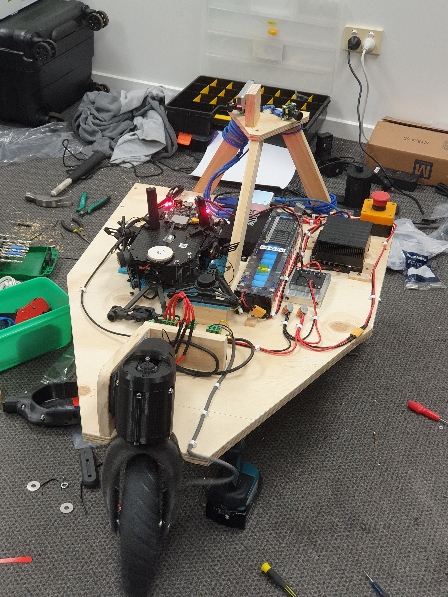
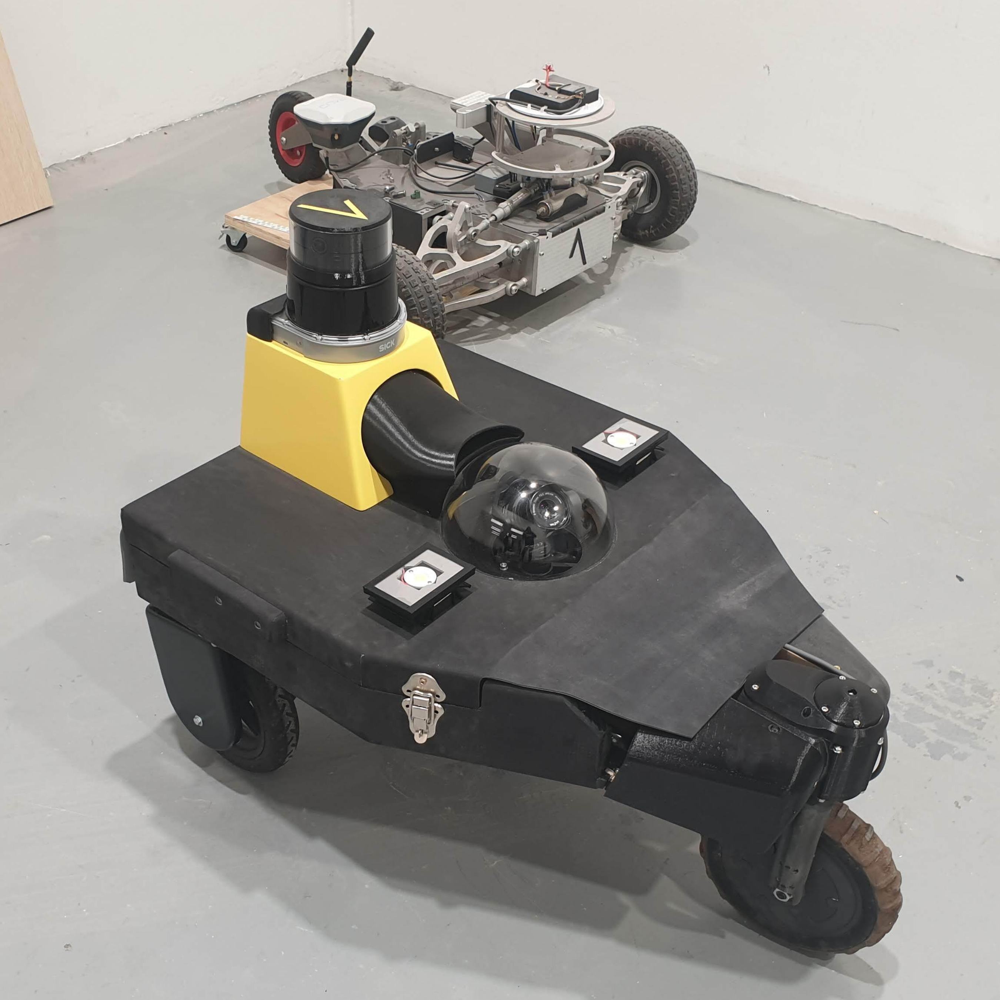

Acuris Systems website is new, improved and on the internet!
Update blogs like this one will be posted every few months to
provide information on the company and details on our technology.
In this update, we'll talk a little about our companies values, and
then give an overview of the history of our company, and the
development of our technology.
In the information age, every industry is looking to data collection to improve their business. At Acuris, we spoke to orchardists in New Zealand and quickly realized there was a demand for fruit counting and canopy analysis information, but that their farms had grown too large for this to be possible with manual methods. While we’re currently focused on solving one problem, and solving it well. Our ethos is to push our robots to be able to do anything on an orchard that a human could do, and be able to operate in multiple different environments, such as in non-kiwifruit orchards, or even on mars one day.


It hasn’t been an easy journey, and the first Acuris robot prototype, Goddard, was assembled in Matt’s apartment living room. Goddard performed admirably, allowing the team to test early robot operating systems and camera setups. A complete refit created Goddard mk2, before the team realized that the drive system and the constraints of the prototype chassis were enough of an issue that a new robot design was needed.
 
After Goddard, we knew that an overhaul of the robot’s design was required, so our third version was created to be completely temporary and easy to test with and edit. Marvin was created with a base of wood, to make creation and redesigns of the chassis as rapid as possible. Marvin was in use for less than a year, but allowed our team to test a number of sensors and key systems while designing our fourth version of the robot, which we planned to make as close as possible to our final rollout design. (all our first time mistakes?)

Anubis is the current, functional prototype, producing working small-scale kiwifruit scans as we speak. It has four wheel independent steering and four wheel drive as well as suspension that allow it to maneuver even on rough terrain. Also featuring dual cinema grade 4k cameras for canopy mapping, the compute power of a gaming computer and enough sensors to rival China’s surveillance state, Anubis is a truly capable, adaptable robotics platform.

Version 5 will be Acuris’ final rollout robot. Anubis’ chassis and drive design need very little updating, and v5 is essentially an under the hood update, aimed at increasing ease of manufacture. Our previous robots have been many-month labours of love, but, with our engineers all out of love, our new version is made to be assembled almost entirely by soulless machine cutting and 3d printing. Version 5 is designed to be more modular than Anubis, with more open internal, and external space for things that don't yet exist. There are also many reliability and servicing considerations that were a nonfactor on previous prototypes.